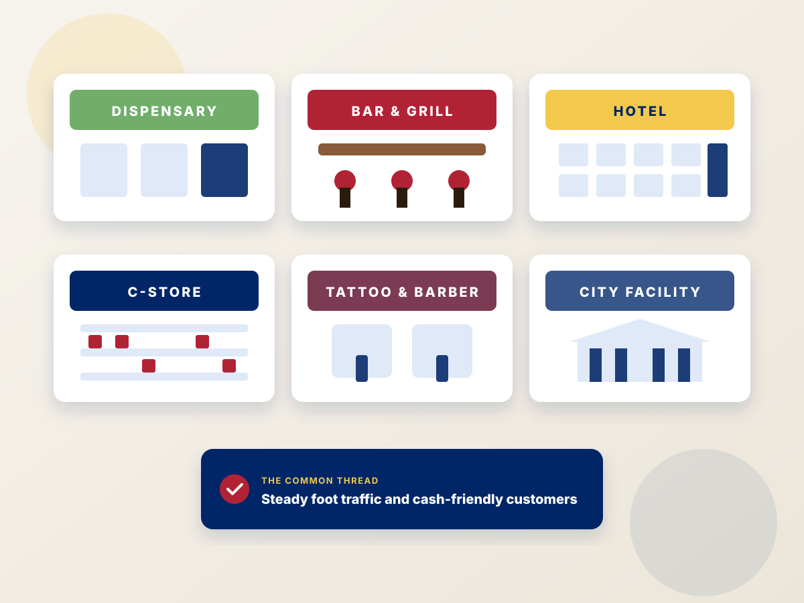
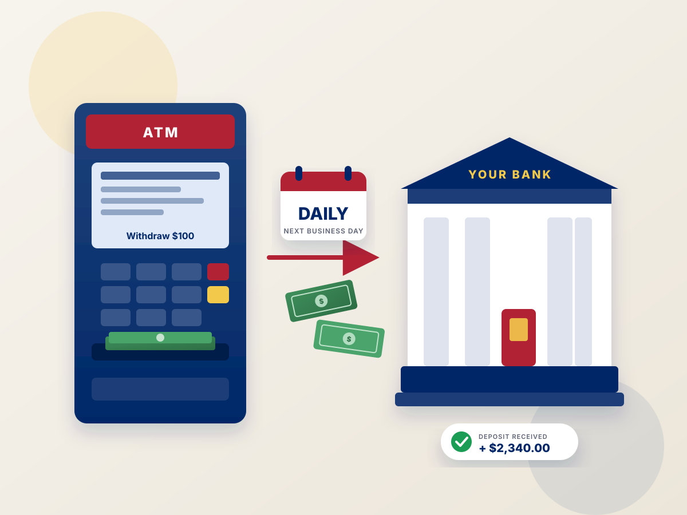

Free ATM placement for Detroit and Michigan businesses — installed, stocked, and monitored by us
Are you a business owner interested in a turnkey ATM solution placed free of charge at your place of business? Our no-cost, full-service program means we take on every expense and every task. You collect a share of the surcharge every month.
Our no-cost, full-service ATM program
Everything an ATM needs to run, handled by Michigan ATM Experts.
Free installation and upgrades
We do not charge to install your ATM or to perform upgrades over the life of the agreement.
Cash loading services
We provide all the capital and keep the machine stocked so your customers always find cash on hand.
Monitoring and maintenance
We monitor your machine 24 hours a day, 365 days a year to ensure continuous operation, and fix problems fast.
Aggressive revenue share
A generous share of every surcharge, paid monthly, so the ATM becomes a steady new income line for your business.
What a free ATM placement can pay your location
Estimates are based on actual US ATM Experts locations. Your numbers will vary with foot traffic and the surcharge we set together.
| Scenario | Surcharge | Your share | Withdrawals / month | Monthly | 3-year total |
|---|---|---|---|---|---|
| Average surcharge, low volume | $3.50 | $0.50 | 100 | $50 | $1,800 |
| Average surcharge, high volume | $3.50 | $0.50 | 300 | $150 | $5,400 |
| High surcharge, low volume | $4.00 | $1.00 | 100 | $100 | $3,600 |
| High surcharge, high volume | $4.00 | $1.00 | 300 | $300 | $10,800 |
Plus the indirect lift: ATM users spend 20–25% more in-store than non-users, and every cash sale avoids card processing fees.

The best Michigan locations for a placed ATM
We've placed machines everywhere from Detroit bars to small-town city halls. The common thread is steady foot traffic and customers who like to pay cash. Strong candidates include:
- Bars, nightclubs, breweries, and restaurants
- Hotels, motels, and resorts
- Convenience stores, smoke shops, and liquor stores
- Tattoo shops, barbershops, and salons
- Nightlife districts and entertainment venues
- City, town, and county facilities
Placement in four steps
Quick qualification
Tell us your business type, hours, and rough foot traffic. Most locations hear back the same day.
Site analysis
We pick the machine, surcharge, and withdrawal limit that best fit your customers.
Install & cash load
We deliver and install the ATM and stock it with our cash. You provide an outlet and a data connection.
Monthly payout
Your surcharge share arrives at the end of each month with a full transaction report.
Should you take a free placement or buy your own ATM?
Free placement
Best if you want zero upfront cost and zero responsibility. We own the machine, supply the cash, and handle service. You earn a per-transaction share, paid monthly.
Buy your own
Best if you have the capital and want to keep 100% of the surcharge. Every machine we sell includes free processing, free shipping, support, and next-day deposits.
See our ATMs →Why Michigan businesses choose Michigan ATM Experts
Local cash routes, not a call center
We run our own cash and service routes across Michigan, from Detroit to Marquette. When a machine needs attention, a technician who covers your area handles it — backed by the resources of the US ATM Experts network.
Built for Michigan traffic patterns
Summer lake tourism, fall color season, and auto show week all change how much cash a location needs. Our cash load prediction software learns each location's pattern so the machine is stocked for the rush and not over-loaded in the lull.
One company for every ATM need
Free placement, compliant dispensary ATMs, ATM processing, and Genmega and Hyosung machines for sale — all from one Michigan team you can reach by phone.
What to expect when we install your ATM
Once your location is approved, we schedule a delivery window that works around your business hours. Our technician positions the machine where it will get the most use, usually near the entrance or the register, and connects it to power. Connectivity is handled by a wireless router, so there's no phone line or ethernet run to arrange.
The machine is loaded with our cash, tested with live transactions, and monitored from the moment it comes online. You'll receive a login for real-time reporting and a direct line to your account representative. Most installs are finished in under an hour.
- Scheduled around your hours
- Placed where it earns the most
- Wireless connectivity included
- Tested live before we leave

Free ATM placement across Michigan
We place, service, and cash-load ATMs across Michigan, from Detroit to Marquette. If your business is in Michigan, we can help.
Free ATM placement FAQs
I already have a Visa/Mastercard terminal. How does an ATM help my bottom line?
Industry reports on North American ATM activity show more than 10 billion transactions a year with over half a trillion dollars dispensed, half of all adults using ATMs regularly, and a typical ATM user spending 20–25% more than a non-user. Customers who pay with cash instead of a debit card also save you credit-card processing fees.
My register already accepts ATM cards. What does an ATM add?
Customers who aren't sure of their balance often avoid making a purchase rather than risk a declined card. At our ATM they can check checking, savings, and credit balances for free, and in most cases transfer funds from savings, then withdraw cash and spend it at your establishment. It also ends cash-back at the register, where you pay processing fees on the full amount and tie up your own drawer cash.
How much does it cost to get started?
With free placement, nothing. We pay for the install, setup, cash loading, and monitoring. All you do is take advantage of the benefits an ATM brings.
How much will the surcharge be?
At setup we analyze your location to determine the best surcharge and maximum withdrawal amount for your customers. Most Michigan locations run between $3.50 and $4.00.
When do I receive my surcharge payout?
Free-placement locations are paid at the end of each month, along with a printout of every transaction for that period.
What are my ongoing expenses?
With a free placement you have none. The ATM needs a data port (or wireless modem) and a standard electrical outlet. One roll of receipt paper is included and typically lasts five to six months; additional rolls cost less than $10.
Do you offer ATM placement near me in Michigan?
If your business is in Michigan, almost certainly yes. We run regular routes through Detroit, Grand Rapids, Ann Arbor, Lansing, Flint, Saginaw, Kalamazoo, Traverse City, Marquette, and Dearborn. See our Detroit, Grand Rapids, Ann Arbor pages, or call and ask about your city.
What kinds of businesses qualify?
Bars, restaurants, nightclubs, hotels and motels, convenience stores, smoke and vape shops, tattoo shops, barbershops and salons, laundromats, entertainment venues, and city or county facilities. If you have steady foot traffic and cash-friendly customers, you're a strong candidate.
Find out if your location qualifies
Send a few details about your business and we'll respond with a recommendation and an earnings estimate — no obligation.